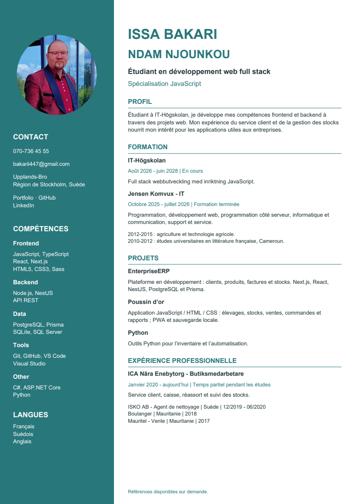

Positionnement
Je poursuis ma formation full stack à IT-Högskolan après une formation IT à Jensen Komvux (octobre 2025 - juillet 2026). Mon objectif : progresser en développement frontend et backend et contribuer à des projets utiles.
Étudiant en Full stack webbutveckling med inriktning JavaScript à IT-Högskolan, d’août 2026 à juin 2028. Je développe mes compétences avec JavaScript, TypeScript, React, Next.js et Node.js à travers des projets concrets.
Mon parcours associe développement web et expérience du service client chez ICA Nära Enebytorg depuis janvier 2020.
Je poursuis ma formation full stack à IT-Högskolan après une formation IT à Jensen Komvux (octobre 2025 - juillet 2026). Mon objectif : progresser en développement frontend et backend et contribuer à des projets utiles.
Mes projets comprennent EnterpriseERP, une plateforme en cours de développement avec Next.js, NestJS et PostgreSQL, Poussin d’or en JavaScript et des outils Python. Mon expérience en magasin m’aide à comprendre les besoins de gestion et de service client.
Technologies utilisées dans mes projets et développées au cours de ma formation.
JavaScript, TypeScript, React, Next.js, HTML5, CSS3, Sass.
Node.js, NestJS, API REST. Autres projets : C#, ASP.NET Core et Python.
PostgreSQL, Prisma, SQLite, SQL Server.
Git, GitHub, VS Code, Visual Studio. HTML5, CSS3 et Sass pour les interfaces.
Les projets sont regroupés pour montrer une progression claire : plateforme ERP, produits web, outils Python et bases frontend.
Plateforme ERP en cours de développement : gestion des clients, produits, factures et stocks. Frontend Next.js / React, backend NestJS et données PostgreSQL avec Prisma. Le dépôt C# / ASP.NET Core correspond à un projet antérieur.
Application web de gestion avicole en JavaScript, HTML et CSS : élevages, stocks, ventes, commandes et rapports, avec fonctionnement PWA et sauvegarde locale.
Code sourceProjet orienté landing page / SaaS avec une attention particulière portée à l’interface et à l’expérience utilisateur.
Code sourceSystème d’inventaire pour magasin alimentaire, utile pour suivre produits, quantités et organisation du stock.
Code sourceProjet Python autour de l’intelligence artificielle générative et des expérimentations IA.
Code sourceSite web interactif qui montre les bases frontend : structure HTML, style CSS et interactions JavaScript.
Code sourceMon portfolio présente mon parcours, mes projets GitHub et mes CV en français, anglais et suédois.
Code sourceMes dépôts GitHub comprennent aussi des exercices frontend, des prototypes et un premier projet EnterpriseERP en C# / ASP.NET Core.
Une formation full stack en cours, complétée par une expérience professionnelle depuis janvier 2020 chez ICA.
Formation au développement web full stack avec une spécialisation JavaScript.
Programmation, développement web, programmation côté serveur, informatique et communication, support et service.
Service client, caisse, réassort et suivi des stocks chez ICA Nära Enebytorg.
Agent de nettoyage chez ISKO AB, Suède (décembre 2019 - juin 2020) ; boulanger en Mauritanie (2018) ; vente chez Mauritel en Mauritanie (2017).
Les documents ajoutés au portfolio renforcent la partie formation et productivité IA.
Le même parcours et les mêmes coordonnées dans les trois versions du CV.

CV professionnel
Formation JavaScript à IT-Högskolan, projets full stack, expérience chez ICA et nouvelle photo : les trois versions reprennent les informations du CV.
Version française du CV, adaptée aux candidatures francophones.
English resume for international and technical applications.
Svensk CV-version för ansökningar i Sverige.
Document de formation ajouté au portfolio.
Certificat Nation AI Productivity Level 2.
Pour échanger sur mes projets et mon parcours en développement web full stack.